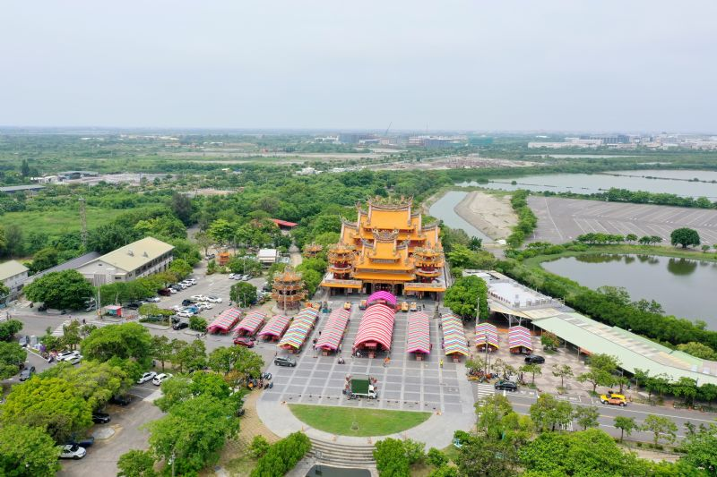
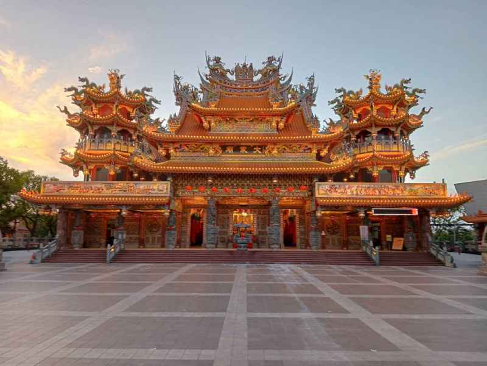

北汕尾島原為平埔族西拉雅人居住之地，後由漢人及荷蘭人、日本人更迭開墾，考據荷據時期地圖北汕尾島已有廟宇存在，應為本廟前身，其前型為漢人廟宇或平埔族公廨已無可考；依現有型制考據，本廟原祀鄭、荷北汕尾「臺灣第一戰」陣亡將士及開臺無祀先民（即現今大眾廟後殿十方聖賢、文武聖君、男女歸服），清康熙39年（西元1700），清臺廈道王之麟奉命重建，已逾三百餘年歷史。
本廟奉祀主神「鎮海元帥」，相傳姓陳名酉（諧音友、又稱陳林每），台灣人，生長於臺南府城鎮北坊十八洞一帶（現今臺南市中西區普濟街普濟殿附近），陳酉年少勤奮自勵，勇力過人，牽牛板車搬運為業，人稱「牛車酉」，相傳清朝官員來臺船舶擱淺於岸，眾人力推不濟，陳酉單人推船入海，為臺灣第一奇人；康熙六十年朱ㄧ貴倡亂陷臺，駐廈門水師提督施世驃統舟師五百餘艘征臺，令陳酉先駕小舟於鹿耳門插標為嚮導，事平敘功授把總，累遷至金門鎮標遊擊。
世代流傳，陳酉秉性剛直、軍紀森嚴，累陞至臺灣總兵、廣西提督，功勳顯赫，為清朝臺人出身之最早最高武官，但因治軍過嚴招致奸官讒言妄語傾軋，而於回朝海中縈懷鬱結、吞金投海身亡，遺體挺立海上，漂泊臺江北汕尾島，乾隆皇帝獲悉，慰以忠肝義膽，正氣磅薄，諡封陳酉為鎮海大元帥，坐鎮大眾廟，為臺灣人成神之第一人。

北汕尾島昔時北扼鹿耳門港南控安平大港，為進出府城門戶，是故舟船帆集，人車雜沓，惟同治十年曾文溪改道造成北汕尾散庄而四草大眾廟倖存，民國六年日本人到此計劃開發安順鹽田前，時北汕尾島地區僅漁戶數家，大眾廟仍由安平、臺江地區人士輪流管理，為臺江地區公廟，鎮海元帥常佑往來士民，拯病救溺神蹟無數，無論祈求事業、身體、家運、姻緣、學業、子嗣皆得應驗，留下很多傳奇的真實故事，信徒廣佈全國各地，香火鼎盛，為臺江地區的守護神，故稱「臺江之神-鎮海元帥」。
本廟除主祀鎮海元帥、十方聖賢，另陪祀觀音佛祖（送子觀音）、註生娘娘、夫人媽（相傳為護產之神），中壇元帥、福德正神、二尊玄天上帝及三尊天上聖母，其中玄天上帝、紅面媽祖應為來自唐山古佛；北港媽祖則源自日治時期大眾廟鎮海元帥擔任北港媽祖南巡先鋒，信眾迎請同祀。
近年本廟於民國85年配合政府舉辦「全國文藝季『發現北汕尾』暨『鎮海元帥遊臺江』」系列活動；民國88年啟建「五朝祈安清醮」，普渡碗數達13萬餘盆；民國96年舉辦第三次「鎮海元帥出巡臺江大典」（第一次於日治大正十年），六天五夜徒步遶境，共有北港朝天宮、祀典大天后宮、鹿耳門聖母廟等宮廟70餘頂神轎，百餘文武陣頭參贊，神威顯赫，諸多神蹟傳為美談！
每年農曆十一月十五日是臺江之神-鎮海元帥聖誕，自十一月上旬開始的年度慶典活動，歡迎十方善信蒞臨

本廟原係「官祀」，日人據臺前皆由官府派遣廟祝清掃，歷史記載嘉慶年間「府城三郊」成立後本廟曾委由管理並屢有修建（本廟現仍存有嘉慶重修墓碑），日人據臺後於昭和元年（民國15年）依原型重建（總經費計日幣六千餘元），民國50年四草里民鳩資修葺，民國73年拆除重建，民國76年（丁卯年農曆十一月初十）入火進殿安座，總經費計新台幣壹億餘萬元。